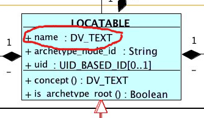

Here, the openEHR RM allows coded values for the LOCATABLE.name attribute. Bindings are stated in the archetype (the model) but are applied to the instance.

SNOMED CT code used: 229819007|Tobacco use and exposure (osbervable entity)|.
229819007|Tobacco use and exposure (osbervable entity)|